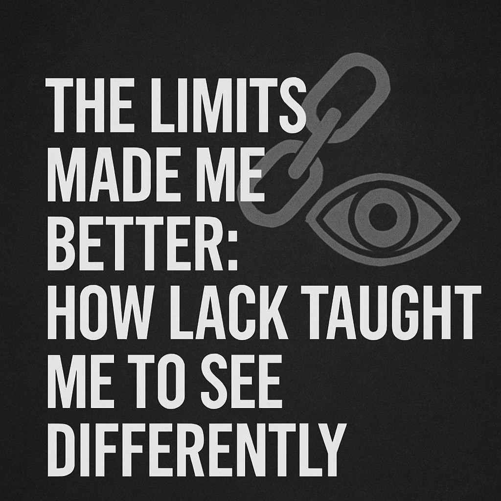

The Limits Made Me Better: How Lack Taught Me to See Differently.

"Creativity isn’t about what you have, it’s about what you see."
There was a time when I thought I couldn’t really create unless I had a proper camera. Or at least a tripod. Or editing software. Or the latest iPhone. But what I didn’t realize then was that all those things I didn’t have were silently giving me something else: vision.
I began my creative journey with no gear, no money, and sometimes, no idea what I was even doing. All I had was borrowed time on my sister’s phone and this burning need to capture what I was feeling. I started shooting with limitations, low-light conditions, shaky hands, no lenses, and no luxury of multiple takes.
But it was inside those limits that I learned how to truly see.
I learned to use sunlight. I learned to change angles instead of filters. I learned that a good frame isn’t just about megapixels, it’s about focus, story, energy. When you don’t have tools, you learn to depend on your eye. Your instinct becomes sharper. Your edits become more intentional. You stop hiding behind effects and start chasing meaning.
Creating with lack made me resourceful. I started using plastic bags, curtains, window light, and even dust to tell stories. I would shoot in unlikely places, behind abandoned buildings, empty fields, random corners of a house, and turn them into art. That shift didn’t come from owning better gear. It came from growing a better eye.
I remember a specific shoot, I didn’t even have permission to use the location. The light was harsh. My hands were shaky. But I saw something in the subject’s eyes and told them to just stand still. One snap. One angle. I knew I had captured a story. That was the day I stopped doubting myself as a photographer.
Sometimes, lack isn’t punishment. It’s sharpening.
If I had everything from the start, I probably wouldn’t have developed the kind of creative discipline I now have. I wouldn’t know how to tell stories through simplicity. I wouldn’t value golden hour light or clean composition. But now, I see through everything. Even noise. Even chaos. Even silence.
Lack taught me to plan shoots in my head before even picking up a device. It taught me to use time wisely, because I never knew when I’d have access to a good phone again. It taught me to think beyond trends. Beyond filters. Beyond gear.
It taught me to see.
Final Thoughts
Creativity without limits is nice. But creativity within limits is powerful. It’s pure. It’s raw. And often, it’s more intentional.
If you’re waiting until you “have better tools,” maybe what you really need is to see better. Your eye is your greatest camera. Your heart is your lens. And your vision is what turns the ordinary into unforgettable.
Don't let lack stop you. Let it train you.
You don’t need more gear.
You need more vision.
Liked this post? Share it with a creative who’s waiting to start.